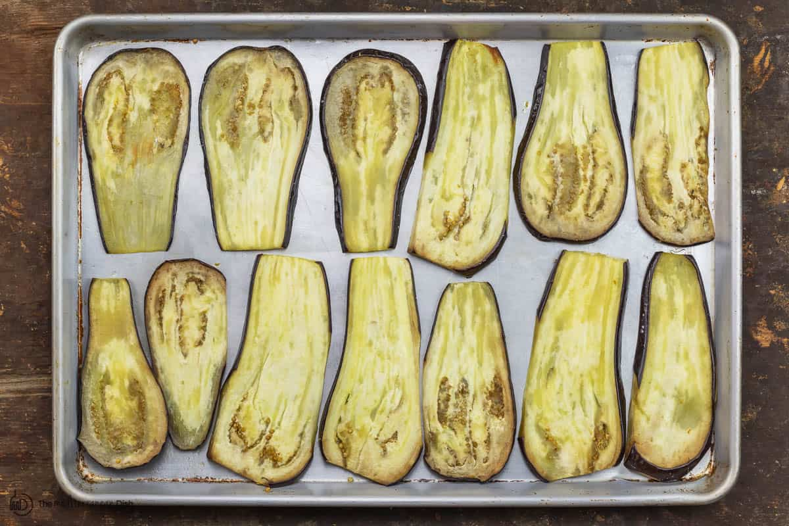

How to make Eggplant Lasagna
This vegetarian eggplant lasagna carries all the comforting Italian flavors we love--complete with layers of a flavor-packed cheese mixture with spinach and fresh herbs + red pasta sauce (you can use store-bought marinara for a shortcut, or try my homemade spaghetti sauce). But in place of the noodles, we have velvety tender roasted eggplant slices!

Ingredients
- eggplants
- salt
- marinara sauce
- fresh herbs
- ricotta cheest
Steps
- Slice and salt the eggplant
- Roast the eggplants at 400 for 20 minutes
- Mix the ricotta cheese and herbs
- Add marinara sauce to a pan
- Place in eggplants and spread chesse mixture
- Bake at 375 for 15 minutes
- Let cool and serve!